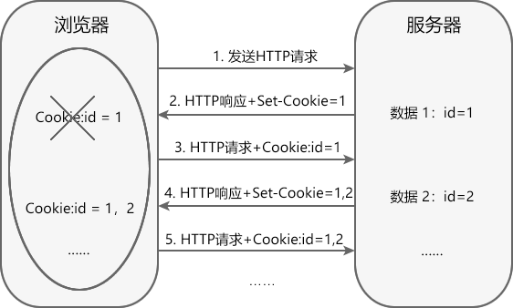
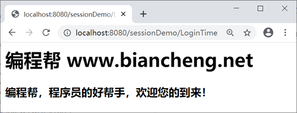
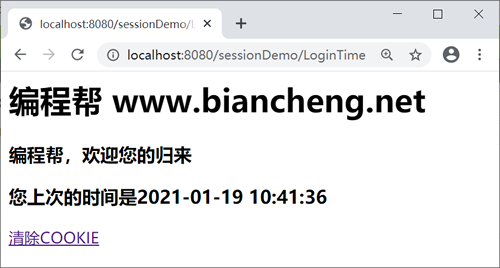

Servlet Cookie的使用
HTTP（超文本传输协议）是一个基于请求与响应模式的无状态协议。
无状态主要指 2 点：
当浏览器发送 HTTP 请求到服务器时，服务器会响应客户端的请求，但当同一个浏览器再次发送请求到该服务器时，服务器并不知道它就是刚才那个浏览器，即 HTTP 协议的请求无法保存用户状态。
通常情况下，用户通过浏览器访问 Web 应用时，服务器都需要保存和跟踪用户的状态。例如，用户在某购物网站结算商品时，Web 服务器必须根据请求用户的身份，找到该用户所购买的商品。由于 HTTP 协议是无协议的，无法保存和跟踪用户状态，所以需要其他的方案来解决问此题，它就是会话技术。
常用的会话技术分为两种：
HttpServletResponse 接口和 HttpServletRequest 接口也都定义了与 Cookie 相关的方法，如下表所示。
javax.servlet.http.Cookie 类中提供了一系列获取或者设置 Cookie 的方法，如下表。
2. 在 net.biancheng.www.cookie 中，创建名称为 LoginTimeServlet 的 Servlet 类，代码如下。
3. 再创建一个名称为 RemoveCookieServlet 的 Servlet 类，代码如下。
4. 启动 Tomcat 服务器，在客户端浏览器地址栏上输入“http://localhost:8080/sessionDemo/LoginTime”，访问 LoginTimeServlet，结果如下图。
5. 再次访问 LoginTimeServlet，结果如下图。
6. 点击超链接“清除COOKIE”，结果如下图。

无状态主要指 2 点：
- 协议对于事务处理没有记忆能力，服务器不能自动维护用户的上下文信息，无法保存用户状态；
- 每次请求都是独立的，不会受到前面请求的影响，也不会影响后面的请求。
当浏览器发送 HTTP 请求到服务器时，服务器会响应客户端的请求，但当同一个浏览器再次发送请求到该服务器时，服务器并不知道它就是刚才那个浏览器，即 HTTP 协议的请求无法保存用户状态。
通常情况下，用户通过浏览器访问 Web 应用时，服务器都需要保存和跟踪用户的状态。例如，用户在某购物网站结算商品时，Web 服务器必须根据请求用户的身份，找到该用户所购买的商品。由于 HTTP 协议是无协议的，无法保存和跟踪用户状态，所以需要其他的方案来解决问此题，它就是会话技术。
会话技术
从打开浏览器访问某个网站，到关闭浏览器的过程，称为一次会话。会话技术是指在会话中，帮助服务器记录用户状态和数据的技术。常用的会话技术分为两种：
- Cookie ：客户端会话技术
- Session ：服务端会话技术
本节将对 Cookie 进行介绍，下节将对 Session 进行介绍。
Cookie
Cookie 属于客户端会话技术，它是服务器发送给浏览器的小段文本信息，存储在客户端浏览器的内存中或硬盘上。当浏览器保存了 Cookie 后，每次访问服务器，都会在 HTTP 请求头中将这个 Cookie 回传给服务器。Cookie 的分类
Cookie分为两种：- 会话级别 Cookie（默认）：Cookie 保存到浏览器的内存中，浏览器关闭则 Cookie 失效。
- 持久的 Cookie：Cookie 以文本文件的形式保存到硬盘上。
Cookie 的工作流程
Cookie 是基于 HTTP 协议实现的，工作流程如下。

- 客户端浏览器访问服务器时，服务器通过在 HTTP 响应中增加 Set-Cookie 字段，将数据信息发送给浏览器。
- 浏览器将 Cookie 保存在内存中或硬盘上。
- 再次请求该服务器时，浏览器通过在 HTTP 请求消息中增加 Cookie 请求头字段，将 Cookie 回传给 Web 服务器。服务器根据 Cookie 信息跟踪客户端的状态。
Cookie API
javax.servlet.http 包中定义了一个 Cookie 类，利用它的带参构造方法，可以创建 Cookie 对象。例如：
Cookie c = new Cookie("url", "www.biancheng.net");
其中参数 name 为 Cookie 的名称，参数 value 为 Cookie 的值，name 与 value 的取值不能包含 [ ] ( ) = , " / ? @ : ; 等字符HttpServletResponse 接口和 HttpServletRequest 接口也都定义了与 Cookie 相关的方法，如下表所示。
| 方法 | 描述 | 所属接口 |
|---|---|---|
| void addCookie(Cookie cookie) | 用于在响应头中增加一个相应的 Set-Cookie 头字段。 | javax.servlet.http.HttpServletResponse |
| Cookie[] getCookies() | 用于获取客户端提交的 Cookie。 | javax.servlet.http.HttpServletRequest |
javax.servlet.http.Cookie 类中提供了一系列获取或者设置 Cookie 的方法，如下表。
| 返回值类型 | 方法 | 描述 |
|---|---|---|
| int | getMaxAge() |
用于获取指定 Cookie 的最大有效时间，以秒为单位。 默认情况下取值为 -1，表示该 Cookie 保留到浏览器关闭为止。 |
| String | getName() | 用于获取 Cookie 的名称。 |
| String | getPath() | 用于获取 Cookie 的有效路径。 |
| boolean | getSecure() | 如果浏览器只通过安全协议发送 Cookie，则返回 true；如果浏览器可以使用任何协议发送 Cookie，则返回 false。 |
| String | getValue() | 用于获取 Cookie 的值。 |
| int | getVersion() | 用于获取 Cookie 遵守的协议版本。 |
| void | setMaxAge(int expiry) |
用于设置 Cookie 的最大有效时间，以秒为单位。 取值为正值时，表示 Cookie 在经过指定时间后过期。取值为负值时，表示 Cookie 不会被持久存储，在 Web 浏览器退出时删除。取值为 0 时，表示删除该 Cookie。 |
| void | setPath(String uri) | 用于指定 Cookie 的路径。 |
| void | setSecure(boolean flag) | 用于设置浏览器是否只能使用安全协议（如 HTTPS 或 SSL）发送 Cookie。 |
| void | setValue(String newValue) | 用于设置 Cookie 的值。 |
Cookie 的使用细节
使用 Cookie 开发时需要注意以下细节：- 一个 Cookie 只能标识一种信息，它至少包含一个名称（NAME）和一个值（VALUE）。
- 如果创建了一个 Cookie，并发送到浏览器，默认情况下它是一个会话级别的 Cookie。用户退出浏览器就被删除。如果希望将 Cookie 存到磁盘上，则需要调用 setMaxAge(int maxAge) 方法设置最大有效时间，以秒为单位。
- 使用 setMaxAge(0) 手动删除 Cookie时，需要使用 setPath 方法指定 Cookie 的路径，且该路径必须与创建 Cookie 时的路径保持一致。
Cookie 的缺点
Cookie 虽然可以解决服务器跟踪用户状态的问题，但是它具有以下缺点：- 在 HTTP 请求中，Cookie 是明文传递的，容易泄露用户信息，安全性不高。
- 浏览器可以禁用 Cookie，一旦被禁用，Cookie 将无法正常工作。
- Cookie 对象中只能设置文本（字符串）信息。
- 客户端浏览器保存 Cookie 的数量和长度是有限制的。
示例
1. 创建一个名称为 sessionDemo 的项目，然后创建名称为 net.biancheng.www.cookie 的包。2. 在 net.biancheng.www.cookie 中，创建名称为 LoginTimeServlet 的 Servlet 类，代码如下。
package net.biancheng.www.cookie;
import java.io.IOException;
import java.net.URLDecoder;
import java.net.URLEncoder;
import java.text.SimpleDateFormat;
import java.util.Date;
import javax.servlet.ServletException;
import javax.servlet.annotation.WebServlet;
import javax.servlet.http.Cookie;
import javax.servlet.http.HttpServlet;
import javax.servlet.http.HttpServletRequest;
import javax.servlet.http.HttpServletResponse;
/**
* 使用 Cookie 记录上次的访问时间
*
* @author 编程帮 www.biancheng.net
*/
@WebServlet("/LoginTime")
public class LoginTimeServlet extends HttpServlet {
private static final long serialVersionUID = -5604481158386227221L;
public void doGet(HttpServletRequest request, HttpServletResponse response)
throws ServletException, IOException {
/**
* 1.获取所有的cookie，判断是否是第一次访问
* 2.如果是第一次访问
* * 输出欢迎，记录当前的时间，回写到浏览器
* 3.如果不是第一次访问
* * 获取时间，输出到浏览器，记录当前的时间，回写到浏览器。
* 记录当前的时间，回写到浏览器。
*/
// 设置字符中文乱码问题
response.setContentType("text/html;charset=UTF-8");
// 获取所有的cookie
Cookie[] cookies = request.getCookies();
// 通过指定cookie名称来查找cookie Cookie c = new Cookie("last","当前的时间");
Cookie cookie = getCookieByName(cookies, "lastTime");
// 判断，如果cookie==null，说明是第一次访问
if (cookie == null) {
// 输出欢迎，记录当前的时间，回写到浏览器
response.getWriter().write("<h1>编程帮 www.biancheng.net</h1>"
+ "<h3>编程帮，欢迎您的到来！</h3>");
} else {
// 获取cookie的值，输出浏览器，记录当前的时间，回写到浏览器
String value = cookie.getValue();
// 输出浏览器（cookie的值中含有 “ ”,需要进行解码）
response.getWriter().write("<h1>编程帮 www.biancheng.net</h1>"
+ "<h3>编程帮，欢迎您的归来</h3><h3>您上次的时间是" + URLDecoder.decode(value) + "</h3>"
+ "<a href=\"/sessionDemo/removeCookie\" > 清除COOKIE</a>");
}
// 记录当前的时间
Date date = new Date();
SimpleDateFormat sdf = new SimpleDateFormat("yyyy-MM-dd HH:mm:ss");
String sDate = sdf.format(date);
// 回写到浏览器
// 使用cookie回写（cookie的值中含有 “ ”,需要进行编码才能使用）
Cookie c = new Cookie("lastTime", URLEncoder.encode(sDate));
// 设置有效时间为一天
c.setMaxAge(60 * 60 * 24); // 秒
// 设置有效路径
c.setPath("/sessionDemo");
// 回写
response.addCookie(c);
}
public void doPost(HttpServletRequest request, HttpServletResponse response)
throws ServletException, IOException {
doGet(request, response);
}
//通过指定名称查找指定的cookie
public static Cookie getCookieByName(Cookie[] cookies, String name) {
// 如果数组是null
if (cookies == null) {
return null;
} else {
// 循环遍历，目的：和name进行匹配，如果匹配成功，返回当前的cookie
for (Cookie cookie : cookies) {
// 获取cookie的名称，和name进行匹配
if (cookie.getName().equals(name)) {
return cookie;
}
}
return null;
}
}
}
3. 再创建一个名称为 RemoveCookieServlet 的 Servlet 类，代码如下。
package net.biancheng.www.cookie;
import java.io.IOException;
import javax.servlet.ServletException;
import javax.servlet.annotation.WebServlet;
import javax.servlet.http.Cookie;
import javax.servlet.http.HttpServlet;
import javax.servlet.http.HttpServletRequest;
import javax.servlet.http.HttpServletResponse;
/**
* 删除 Cookie
* @author 编程帮 www.biancheng.net
*/
@WebServlet("/removeCookie")
public class RemoveCookieServlet extends HttpServlet {
private static final long serialVersionUID = 1L;
protected void doGet(HttpServletRequest request, HttpServletResponse response) throws ServletException, IOException {
// 获取cookie
Cookie cookie = new Cookie("lastTime", "");
// 设置有效时间为0，删除cookie
cookie.setMaxAge(0);
// 设置有效路径，必须与要删除的Cookie的路径一致
cookie.setPath("/sessionDemo");
// 回写
response.addCookie(cookie);
// 重定向商品列表页面
response.sendRedirect("/sessionDemo/LoginTime");
}
protected void doPost(HttpServletRequest request, HttpServletResponse response) throws ServletException, IOException {
doGet(request, response);
}
}
4. 启动 Tomcat 服务器，在客户端浏览器地址栏上输入“http://localhost:8080/sessionDemo/LoginTime”，访问 LoginTimeServlet，结果如下图。

5. 再次访问 LoginTimeServlet，结果如下图。

6. 点击超链接“清除COOKIE”，结果如下图。
关注公众号「站长严长生」，在手机上阅读所有教程，随时随地都能学习。内含一款搜索神器，免费下载全网书籍和视频。

微信扫码关注公众号